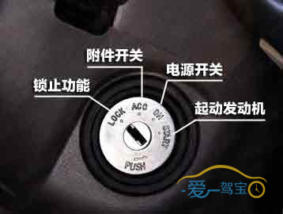

点火系统的开关，可自由开启或关闭点火线圈的主要电路。点火开关分四个档位，LOCK锁死汽车，ACC给全车通电，ON除了起动机，其余的基础设备都是开着的，正常行车时钥匙处于ON状态，这时全车所有电路都处于工作状态。START发动汽车，START档是发动机启动档位，启动后会自动恢复正常状态也就是ON档。
操作步骤
1 钥匙插进点火开关后，在每个档位做瞬间停留大约1、2秒钟，这时应该能听见各级电器设备通电的声音，然后再进入下一个档位就可以了。

爱驾宝温馨提示
这四个档每个档位都是递进式的，目的是让电器设备逐个进入工作状态，这样还可以缓解由于瞬间通电造成的汽车电瓶的负担。如果着车时在其它档位不做停留，从LOCK直接进入START的启动状态，会瞬间增加电瓶的负荷，同时由于各电器设备还没有完全进入工作状态，电脑很难正常指挥发动机启动，所以这种操作对电瓶和发动机都是非常不利的。经常这样操作会缩短电瓶的使用寿命，会造成发动机启动困难，促使积炭的产生。